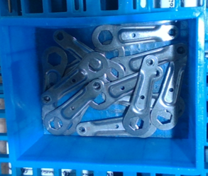
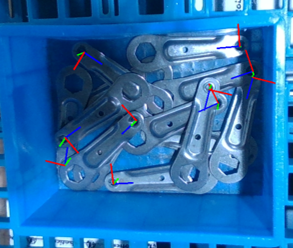
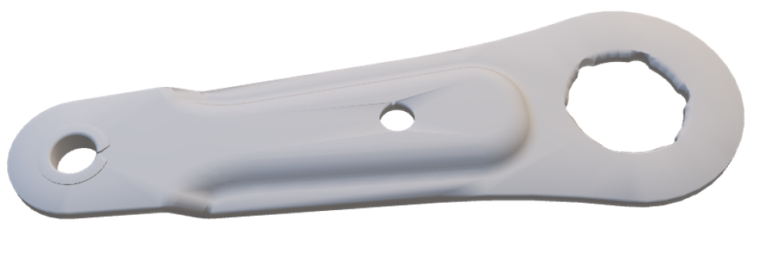
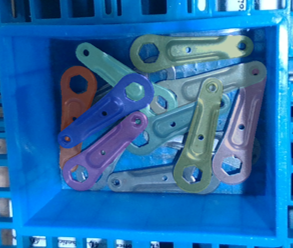
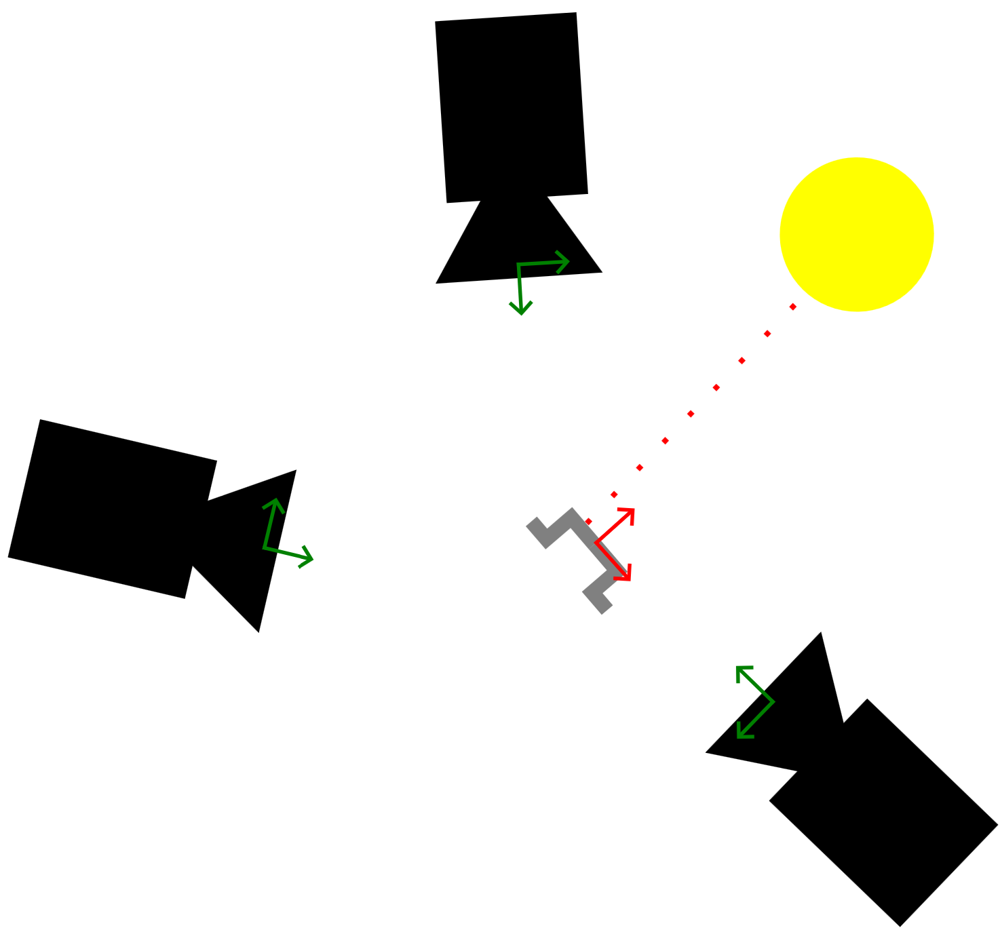
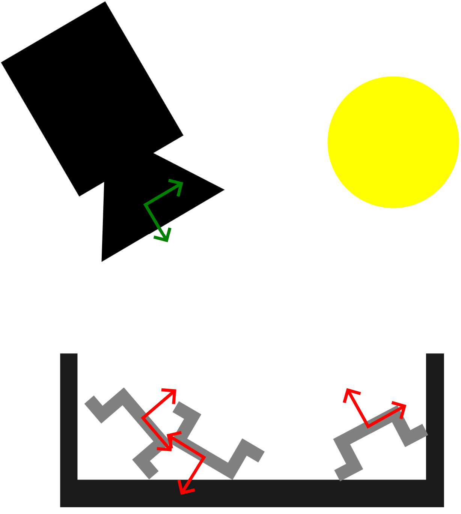
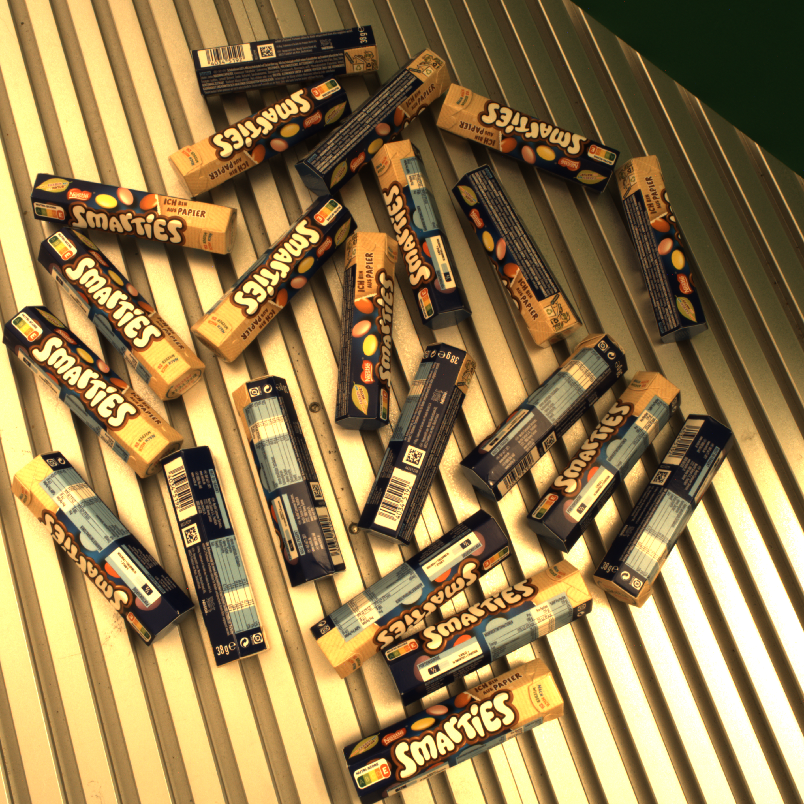
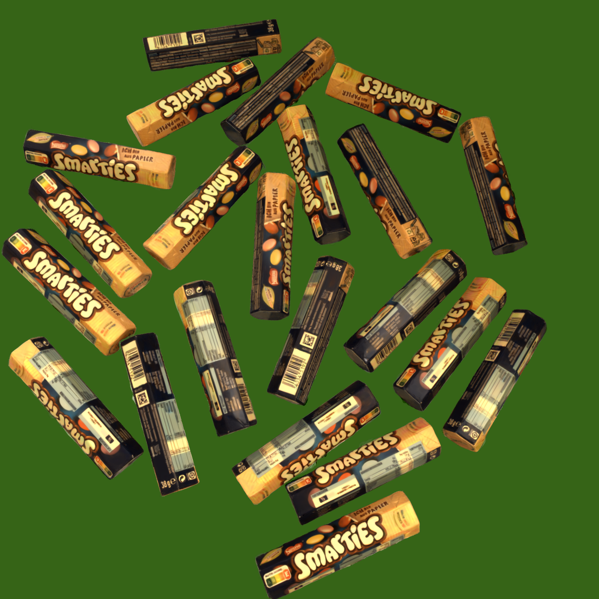
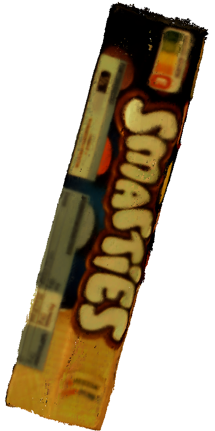

- [1] J. L. Schönberger and J.-M. Frahm, “Structure-from-Motion Revisited,” in Proceedings of the IEEE Conference on Computer Vision and Pattern Recognition (CVPR), pp. 4104–4113, 2016.
- [2] N. Carion et al., “SAM 3: Segment Anything with Concepts,” arXiv preprint arXiv:2511.16719, 2025.
- [3] J. Huang et al., “XYZ-IBD: A High-Precision Bin-Picking Dataset for Object 6D Pose Estimation Capturing Real-World Industrial Complexity,” arXiv preprint arXiv:2506.00599, 2025.
- [4] F. Di Sario et al., “Spherical Voronoi: Directional Appearance as a Differentiable Partition of the Sphere,” in Proceedings of the IEEE/CVF Conference on Computer Vision and Pattern Recognition (CVPR), pp. 22529–22538, 2026.
- [5] B. Kerbl et al., “3D Gaussian Splatting for Real-Time Radiance Field Rendering,” ACM Transactions on Graphics, vol. 42, no. 4, p. 139, 2023.
- [6] B. Huang et al., “2D Gaussian Splatting for Geometrically Accurate Radiance Fields,” in ACM SIGGRAPH 2024 Conference Papers, pp. 1–11, 2024.
MooMIns




Visualization of the novel machine vision task. Given a multi-instance image, i.e., a monocular image showing multiple instances of the same object from different perspectives (top),the task is to determine the 6D object poses (bottom left), along with the masks (bottom right) of all instances, and a 3D reconstruction of the canonical object (bottom middle). Images from the XYZ-IBD dataset [3].
Abstract
Simultaneous 3D reconstruction and 6D object pose estimation from a single monocular image is an inherently ill-posed problem. In industrial settings, however, multiple instances of an object are often randomly arranged in bins, implicitly providing several views of the same object within a single image. We show that this implicit multi-view geometry can be exploited to simultaneously reconstruct the object in 3D and estimate the 6D pose of each visible object instance. We present MooMIns, a new Gaussian-splatting (GS) based approach [5] that inverts the original GS formulation: instead of rendering a single scene from multiple cameras, we render multiple object instances from a single camera. Our method is initialized with SAM3 instance segmentation masks [2] and a modified Structure from Motion (SfM) pipeline [1]. In contrast to learned monocular depth estimation, we perform true geometry-based reconstruction from image evidence, avoiding hallucinations caused by training data priors. We evaluate MooMIns on synthetic and real bin-picking scenarios, and demonstrate accurate reconstruction of previously unseen objects as well as reliable pose estimation of individual instances
Method
MooMINS uses a GS-based approach. For higher 3D reconstruction quality, we use a 2D GS [6] backbone, specifically Spherical Voronoi (SV) [4], which seperates illumination from geometry. The input for MooMIns consists merely of a single calibrated multi-instance image. Then, in a zero-shot manner, we output the 6D object poses of all instances, the instance segmentation masks, and a 3D reconstruction of the canonical object via iterative optimization of our modified GS pipeline. Our modified GS pipeline is initialized from SfM extrinsics and SAM3 instance segmentation masks. As GS is designed for rendering a single scene from multiple cameras, but MooMIns only inputs a single image and should render multiple object instances, we invert the formulation. This approach has several advantages:
- The global lighting is consistent throughout the scene, such that inter- and intra object reflections are better modeled.
- Multiple or all instances can be rendered at the same time, which implicitly introduces multi-view constraints for a consistent geometry estimation.
- In each iteration of our modified GS pipeline, we can use the entire image with all the information of all object instances, which in the end leads to a smooth convergence, whereas conventional GS considers a different image at each iteration containing only a subset of the scene information, which usually leads to an unstable convergence with strong fluctuations.


Comparison of scene composition between standard GS (left) and our modified GS pipeline (right). Instead of rendering a single scene from a different camera each iteration, we render multiple object instances, which all share the same geometry and render them from the same camera each iteration. Geometry updates are performed on the canonical object, which is then transformed to the individual object instance poses by using the optimizable 6D object poses.
Results



We show qualitative results of MooMIns on a real multi-instance image (left). The final masked and rendered image (middle) consists of multiple object instances with shared geometry. The 3D reconstruction mesh (right) is generated by extracting the mesh of the canonical object.
For more results, please refer to the paper.
×